Voltage Controlled Oscillator (VCO)¶
Theorie und Motivation¶
Voltage controlled oscillator sind Schaltungen, die die Frequenz der Ausgangsspannung in Abhängigkeit der Eingangsspannung ändern. Bekannt ist auch die Wirkung als Funktionsgenerator mit einem Rechtecksignal am Ausgang.
In der Praxis kann die Schaltung in der elektronischen Musik als Synthesizer, bei Motorregelungen, als Funktionsgenerator und beim Sendersuchlauf in Verbindung mit PLL genutzt werden.
Ein VCO kann mit Hilfe eines Multiplizierers, eine Integrierers und eines nicht invertierenden Schmitt-Triggers realisiert werden. Als erstes wird das Schmitt-Trigger-Glied versuchstechnisch genauer unter die Lupe genommen. Dazu ändert sich der Rückführungswiderstand und die Wirkungsweise wird in Abhängigkeit eines Sinus-Signals analysiert. Dafür liegt eine Spice-Simulation vor, die anschließend in die Realität umgesetzt und messtechnisch aufgenommen wird. Anschließend werden die simulierten Werte mit den Gemessenen unter Zuhilfenahme von Matlab verglichen.
Als zweiten Versuch wird die gesamte VCO-Schaltung untersucht. Die Eingangsgleichspannung wird von 1 V bis 10 V variiert und die Ausgangsspannung gemessen. Ein Matlabprogramm legt nun beide Ausgangskurven eingerückt übereinander und setzt sie in Verbindung mit der Eingangsspannung. Für einen gleichmäßigen High- und Low-Pegel muss eine kleine Anpassschaltung das Ausgangssignal leicht manipulieren. Die Veränderung dieser Anpassschaltung wird mit der Frequenz der Ausgangsspannung in einen Grafen und mit der Eingangsspannung in einen anderen Grafen aufgetragen.
Schaltungsaufbau Schmitt-Trigger¶
Der Schmitt Trigger besteht in diesem Fall aus 3 Bauelementen:
2 Widerstände
Operationsverstärker
Die Abbildung zeigt den Aufbau eines nicht invertierenden Schmitt-Triggers mit einer Versorgungsspannung des Operationsverstärkers von +/- 10 V. Die Schaltung arbeitet wie ein Komparator, bei dem der Ein- und Ausschaltpegel nicht den selben Wert haben. Das heißt eine Schalthysterese (zweite Abbildung) des Komparators wird erzielt. Ausschaltpegel \(U_{e, aus}\) beziehungsweise Einschaltpegel \(U_{e, ein}\) lassen sich berechnen und als Schalthysterese \(\Delta U_{e}\) zusammenfassen. Es lassen sich also gut analoge Signale in digitale Signale umwandeln. Für den Versuch wird der Schmitt-Trigger eingangsseitig mit einer Sinus-Wechelspannung (4 V Amplitude) gespeist. Die dritte Abbildung zeigt das beispielhafte Verhalten des Schmitt-Triggers.
$$ U_{e, aus}=-\frac{R_1}{R_2}U_{a, max} $${=latex html}
$$ U_{e, ein}=-\frac{R_1}{R_2}U_{a, min} $${=latex html}
$$ \Delta U_{e}=\frac{R_1}{R_2}(U_{a, max}-U_{a, min}) $${=latex html}
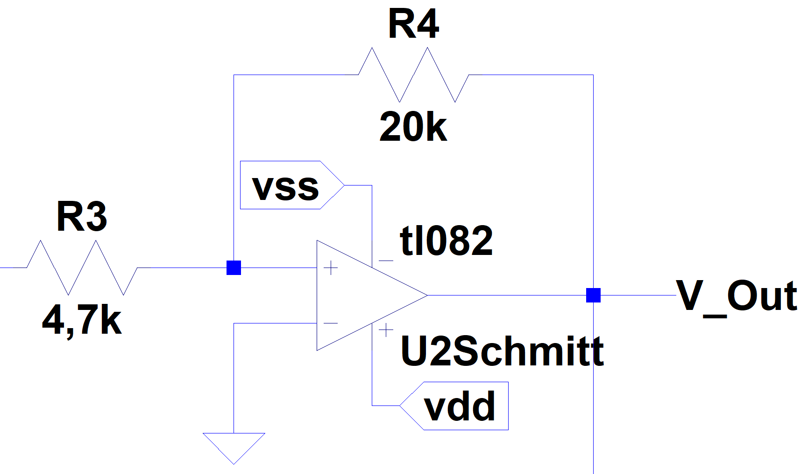{##exp06_fig_01 .align-center}
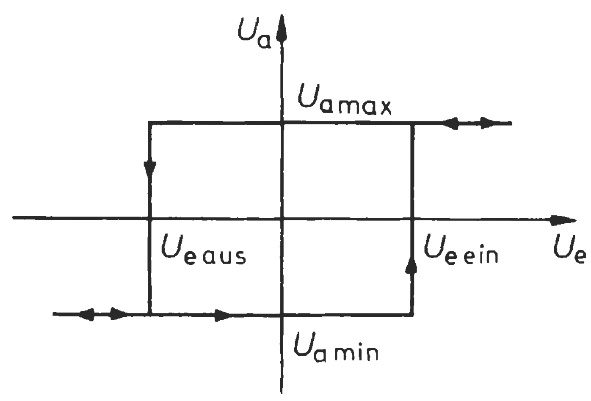{##exp06_fig_02 .align-center}
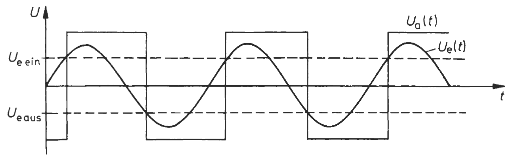{##exp06_fig_03 .align-center}
Schaltungsaufbau VCO¶
Der VCO besteht aus 3 wichtige Komponenten:
Multiplizierer
Integrierer
Schmitt-Trigger
Als Anpassungsschaltung dient hier eine kleine Dioden-Widerstand-Schaltung. Versorgt werden die Operationsverstärker sowie der Multiplizierer mit +/-10V. Eingangsseitig sorgt ein Gleichsignal mit verschiedenen Spannungsleveln von 1-10 V für eine beispielhafte Beschaltung.
Für den Multiplizierer (hier: MPY 634, roter Kasten) lässt sich das Ausgangssignal berechnen. X1/ X2 stellen dabei Eingang 1, Y1/ Y2 Eingang 2 dar. Über SF lässt sich der Skalierungsfaktor steuern und an VS gehört die Versorgungsspannung. Z1 wird meist gegen Ground oder sehr hochohmig angeschlossen, Z2 erlaubt einen Offset am Ausgang.
$$ V_{out} = A \cdot \frac{(X1-X2)(Y1-Y2)}{SF}(Z1-Z2) $${=latex html}
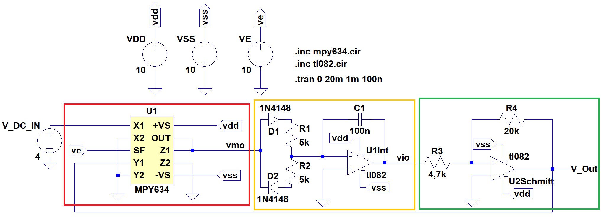{##exp06_fig_04 .align-center}
Für den Integrierer mit vorgeschalteter Anpassschaltung (gelber Kasten), bestehend aus 2 Dioden und 2 Widerständen, gilt für eine konstante Eingangsspannung:
$$ U_a=-\frac{U_e}{RC}t+U_{a, Anfang} $${=latex html}
$$ U_{a, Anfang}= \frac{Q_{Anfang}}{C} $${=latex html}
Dazu kann die Anpassschaltung mit einem einzelnen Widerstand R ersetzt werden. Je nach Größe des Eingangswiderstandes lädt sich der Kondensator schneller auf. Die Schaltung arbeitet invertierend, es gilt:
$$ Q(R)\sim U_C(R,C)=-U_a(R,C) $${=latex html}
Die Anpassschaltung, im Versuchsaufbau mit einem Trimmer realisiert, bestimmt flexibel, welcher Strom in den Integrator ein-/ zurückfließt. Damit lassen sich variabel die High-/ und Lowzeiten des Ausgangssignal der VCO beeinflussen.
Mit einer Wechselspannung am Eingang ergibt sich folgende Gleichung:
$$ |U_a|=\frac{U_e}{2\pi fCR} $${=latex html}
Der grüne Kasten entspricht dem schon gezeigten Schmitt-Trigger.
Schmitt-Trigger Messung und Auswertung¶
Die Abbildungen zeigen in rot das gemessene Sinus-Eingangssignal mit einer Amplitude von 4 V und einer Frequenz von 50 Hz. In blau ist das gemessene Ausgangssignal dargestellt und mit dem simulierten Ausgangssignal (orange) an der ersten steigenden Flanke mit Matlab übereinander gelegt. Mit R2=9,5 k zeigen sich kleine Differenzen in der Periodendauer, sowie ein komplett anderer Ausgangspegel. Möglicherweise ist bei der Simulation ein gröberer Fehler unterlaufen, der das Ausgangssignal verlustfrei statt verlustbehaftet ausgibt.
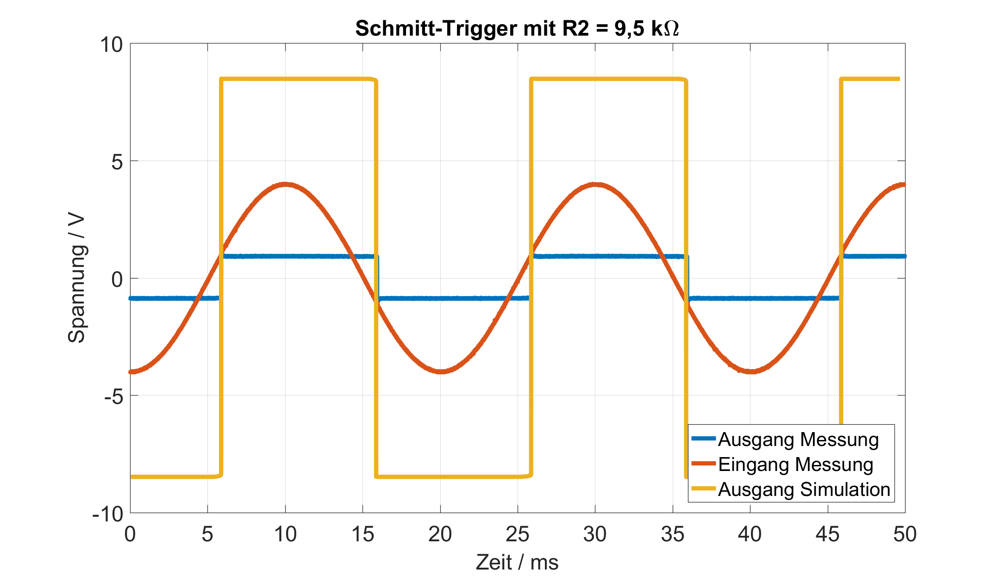{##exp06_fig_05 .align-center}
Mit einem kleineren R2 Widerstand erfolgt der Umschaltzeitpunkt später als mit dem größeren Widerstand. Im Moment des Umschaltens erfolgt außerdem eine deutliche Überspannung des Ausgangssignals, wobei die Versorgungsspannung kurzzeitig leicht einbricht. Während des Umschaltens sinkt die Ausgangsspannung zusätzlich für den Bruchteil einer Millisekunde auf 0 V ab.
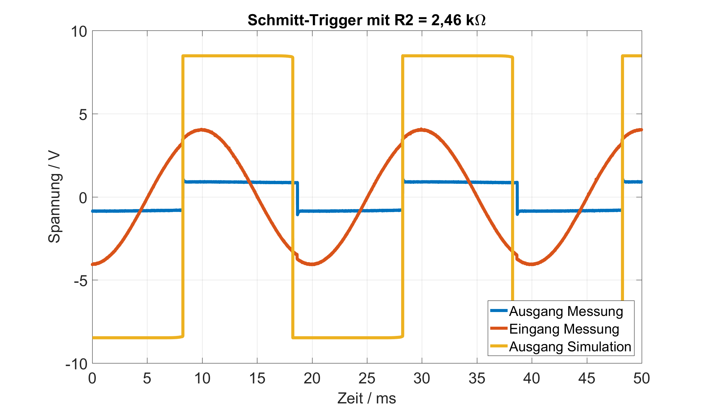{##exp06_fig_06 .align-center}
VCO Messung und Auswertung¶
Der VCO wird bei diesem Versuch mit verschiedenen Gleichspannungen gespeist, die Ausgangsspannungen werden gemessen und die Widerstandswerte der Anpassschaltung (Tabelle über Grafen) werden aufgezeichnet. Die folgenden 5 Grafen zeigen die gemessenen Eingangs-bzw. Ausgangsspannungen. Zusätzlich sind die simulierten Spannungswerte ebenfalls abgebildet, wobei dazu mit Hilfe von Matlab die Simulationswerte soweit verschoben sind, bis äquivalente Flanken übereinander liegen. Für eine gute Sichtbarkeit sind dicke Linien ausgewählt und jeweils zwei Spannungen befinden sich in einem Grafen.
Diagramm 1 zeigt bei der Messung ein relativ starkes Rauchen von mehreren Zehntel Volt. Die Amplitude ist minimal höher als bei der Simulation. Die Simulation hat eine niedrigere Frequenz als die Messung und das Verhältnis von negativer zu positiver Spannung ist unregelmäßig.
±—————————–+ | Widerstandsanpassung 1 | +==============================+ | Widerstand 0 - 2 ms 2 - 4 ms | ±—————————–+ | ========== ======== ======== | ±—————————–+ | > R1 3,645 k 3,645 k | ±—————————–+ | > R2 7,56 k 7,56 k | ±—————————–+
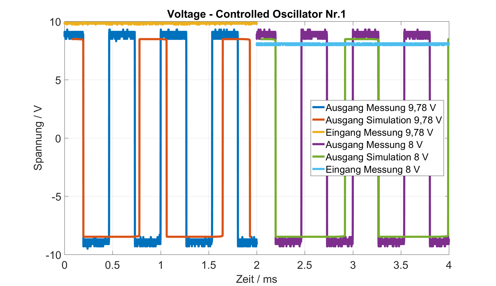{##exp06_fig_07 .align-center}
Bei kleinerer Eingangsspannung (siehe Diagramm 2) bleibt die Frequenz der gemessenen Ausgangsspannung nahezu gleich.
±—————————–+ | Widerstandsanpassung 2 | +==============================+ | Widerstand 0 - 2 ms 2 - 4 ms | ±—————————–+ | ========== ======== ======== | ±—————————–+ | > R1 3,795 k 3,309 k | ±—————————–+ | > R2 6,207 k 7,97 k | ±—————————–+
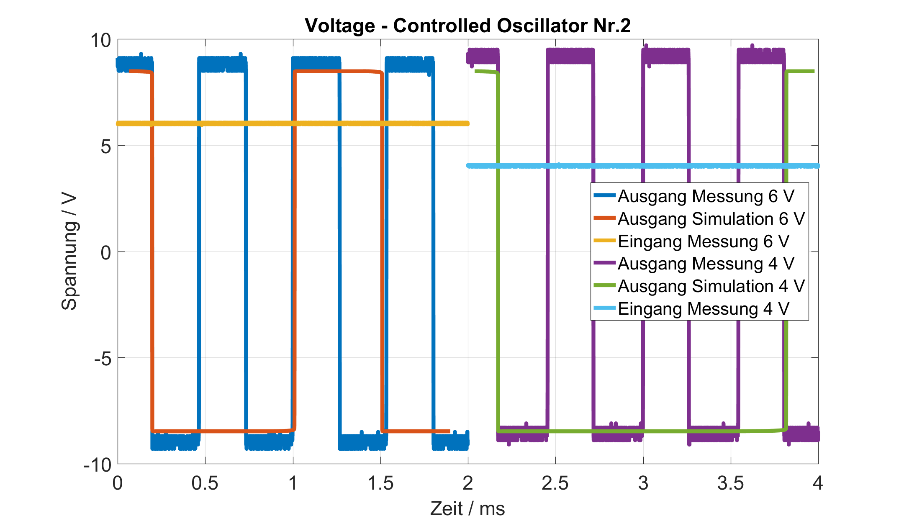{##exp06_fig_08 .align-center}
Die Periode der Simulation (Diagramm 3) mit Eingangsspannung von 1,8 V ist zu groß, um sie mit der gemessenen Spannung übereinander zu legen. Erste Änderungen der gemessenen Frequenz sind sichtbar.
±—————————–+ | Widerstandsanpassung 3 | +==============================+ | Widerstand 0 - 2 ms 2 - 4 ms | ±—————————–+ | ========== ======== ======== | ±—————————–+ | > R1 2,698 k 2,465 k | ±—————————–+ | > R2 8,44 k 8,61 k | ±—————————–+
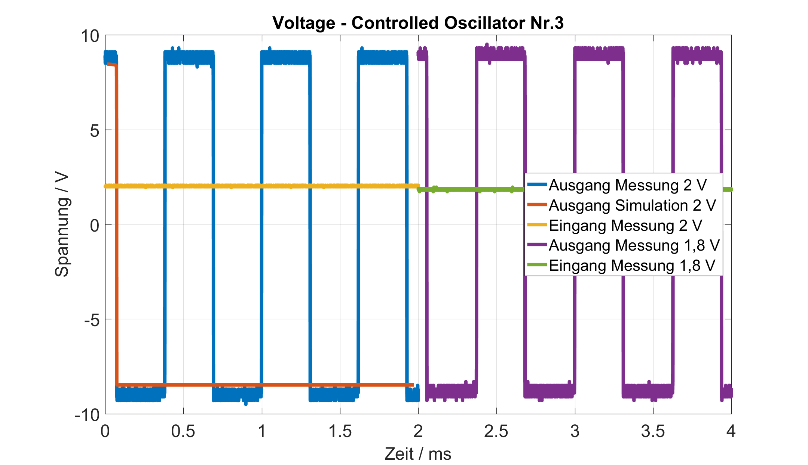{##exp06_fig_09 .align-center}
In Diagramm 4 wird bei der Anpassschaltung Widerstand R1 größer obwohl R2 konstant bleibt. Da bei einem Trimmer der Gesamtwiderstand immer konstant sein sollte, liegt sehr wahrscheinlich eine fehlerhafte Messung der Widerstände vor. Trotz kleinerer Spannungsabstände resultieren immer größere Frequenzänderungen bei der Messung.
±—————————–+ | Widerstandsanpassung 4 | +==============================+ | Widerstand 0 - 2 ms 2 - 4 ms | ±—————————–+ | ========== ======== ======== | ±—————————–+ | > R1 2,195 k 2,285 k | ±—————————–+ | > R2 8,86 k 8,86 k | ±—————————–+
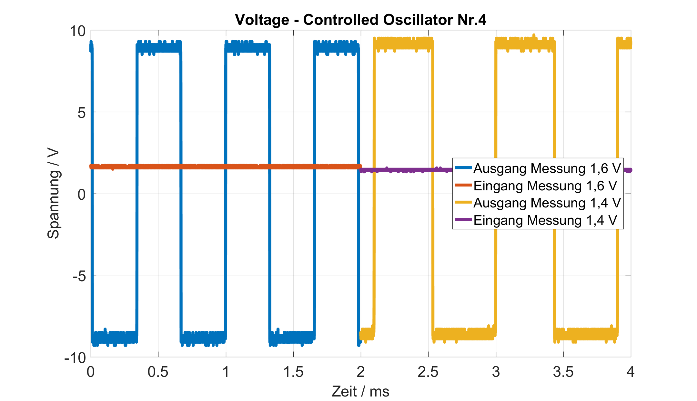{##exp06_fig_10 .align-center}
Der Frequenzsprung von 1,2 V zu 1 V Eingangsspannung ist sehr groß, womit die Schaltung auch im Vergleich mit den Diagrammen 1-4 nicht linear arbeitet. Die gemessenen Werte der Anpassschaltung sind unrealistisch, da der Trimmer einen Gesamtwiderstand von 10 k besitzt. Die kleine Eingangsspannung sorgt für ein großes Rauschen am Ausgang.
±—————————–+ | Widerstandsanpassung 5 | +==============================+ | Widerstand 0 - 2 ms 2 - 4 ms | ±—————————–+ | ========== ======== ======== | ±—————————–+ | > R1 1,383 k 0,507 k | ±—————————–+ | > R2 9,6 k 21,85 k | ±—————————–+
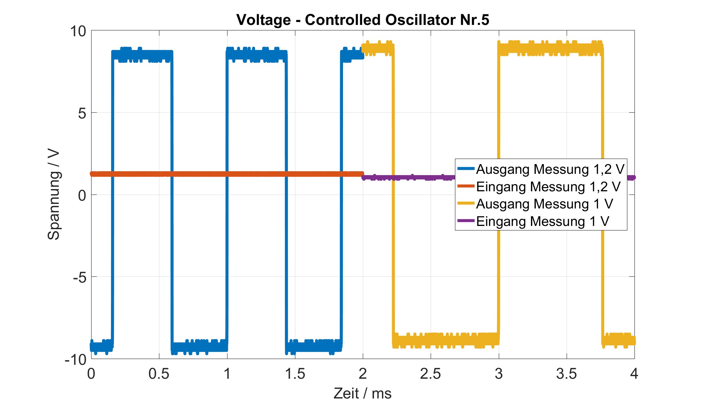{##exp06_fig_11 .align-center}
Im Folgenden sind zwei Grafen, die die Entwicklung der Widerstandswerte der Anpassschaltung in Abhängigkeit der Eingangsspannung und der Frequenz zeigen. Die Widerstandswerte sind dabei händisch am Trimmer eingestellt und sollen möglichst für eine gleichmäßige High- zu Low-Zeit am Ausgang sorgen. Die eingestellten Werte sind automatisch ungenau, da sie nicht berechnet sind, sondern nach optischer Sichtung eingestellt werden.
Die Widerstandsanpassung in Verbindung mit der Spannung zeigt, dass der Vorwärtswiderstand R1 mit größerer Eingangsspannung immer größer gewählt werden muss um ein gleichmäßiges Rechtecksignal am Ausgang zu erzielen. Dementsprechend wird der Rückwärtswiderstand R2 immer kleiner.
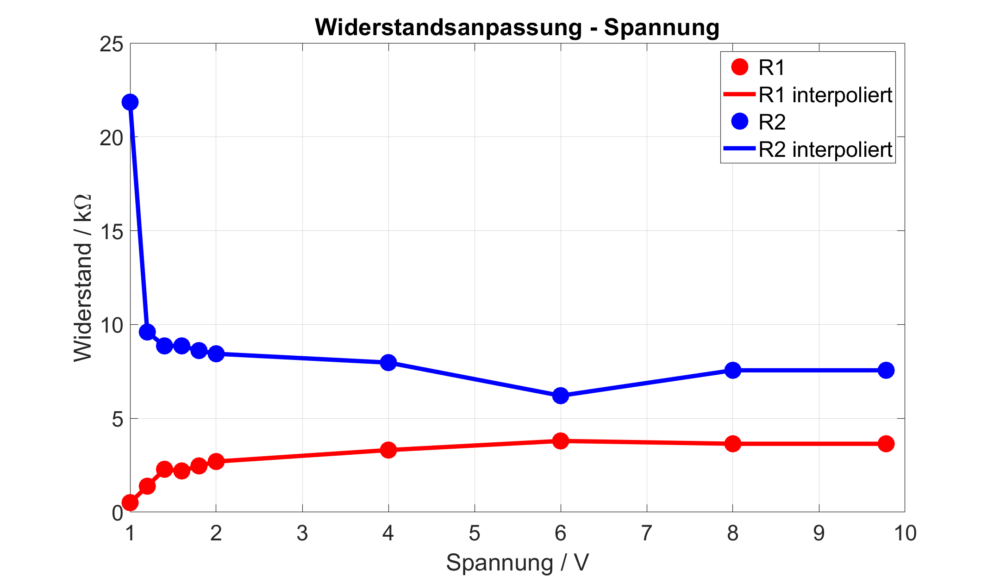{##exp06_fig_12 .align-center}
Die Messpunkte in Abhängigkeit der Ausgangsfrequenz sind schlecht verteilt, da in diesem Fall äquidistante Frequenzabstände ideal wären. Die Anpassschaltung arbeitet nicht linear, sodass gleiche Spannungsabstände nicht für gleiche Frequenzabstände sorgen. Die Widerstände bei niedriger Frequenz unterliegen sehr wahrscheinlich dem oben genannten Messfehler. Bei hohen Frequenzen liegen die gemessenen Widerstandswerte eng beieinander und enthalten vorraussichtlich ebenfalls Messfehler, da die Werte dem Kurvenverlauf zu urteilen nicht realistisch sind.
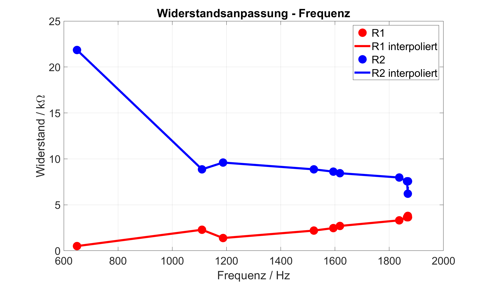{##exp06_fig_13 .align-center}
Fazit¶
Zusammenfassend eignet sich ein Schmitt-Trigger besonders gut als Analog-Digital-Wandler und ermöglicht dabei eine Hysteresekurve. Der VCO lässt sich mit einem Multiplizierer, Integrierer und Schmitt-Trigger realisieren. Messungenauigkeiten und Rauschen stören das Ergebnis der umgesetzten Schaltung. Die Simulationsfrequenz und die Versuchsfrequenz bzw. Low/High Zeiten stimmen nicht überein, womit sich Probleme bei der Skalierung herauskristallisieren. Abschließend verhält sich die Eingangsspannung nicht linear zur Ausgangsfrequenz.